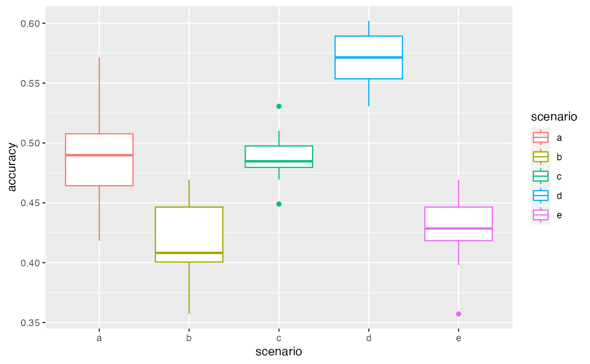
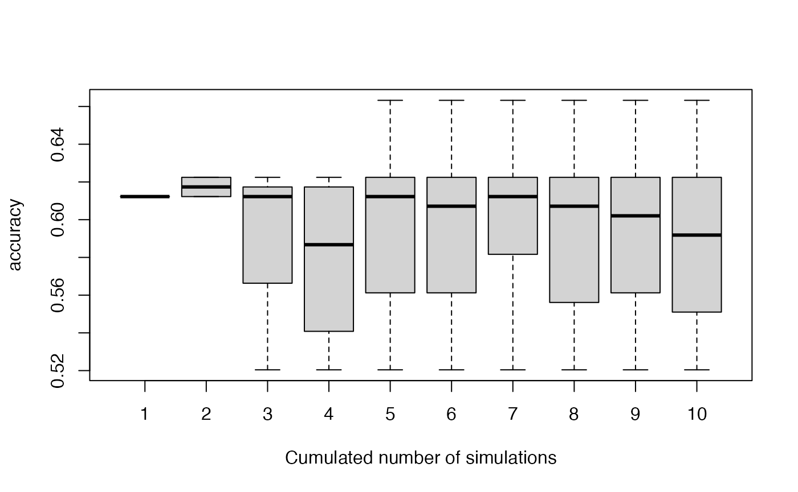
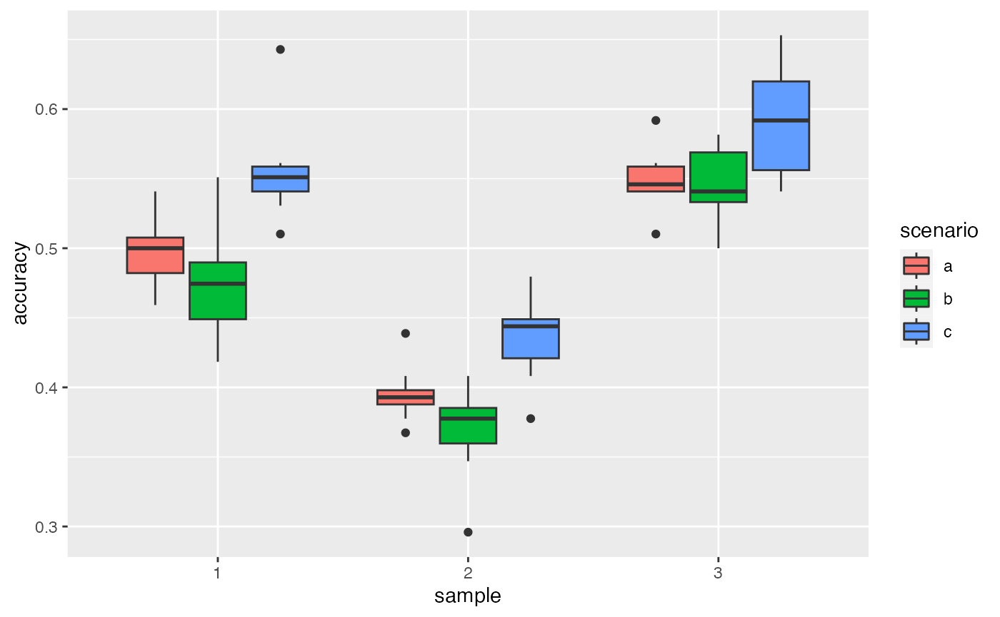

set.seed(56)The choice of the settings used for the gap filling is important for the quality of the estimation. It is specific to the study and the dataset of the user, so it is interesting to compare different settings and to choose the one that performs the best:
- choice of observation data (DataAsso): Using the same dataset (or a dataset to limited in its size or spatial extent) can lead to underestimating diversity as it underestimate the dispersal of species from outside. Using a too wide data set could lead to associating species that are not present in the area.
- the choice of the prior data depends on the team that has performed the vernacular identification and on the spatial extent of the data to gapfill and of the prior.
- the relative weights given to the prior and the observation depends on the quantity and quality of information brought by the prior and the observation.
- the effect of the value of \(\epsilon\) can also be tested.
- the overall percentage of trees used for testing (pc2fill) can also be tested.
- the percentage of trees from the test dataset (pc2fill percent of the total) that we consider determined to the family (pcFamilyDet) or to the genus (pcGenusDet) should logically be chosen to be similar to these in the data set we want to gapfill (but this can also be changed). The rest (100 - pcFamilyDet - pcGenusDet) is considered not determined at all.
For this, we use the function CompareSim. This function “masks” the identification of the trees fully identified and test if it can be successfully retrieved with the setting chosen. The proportion of correct association is called accuracy.
Preparing the data
We first prepare the data as in the Introduction vignette.
- The data we want to gapfill:
library(vernabota)
data(Paracou6_2016)
Data2fill <- Paracou6_2016[Paracou6_2016$SubPlot==1,]
Data2fill <- PrepData(Data2fill)- The priors:
data(PriorAllFG_20220126)
PriorAllFG <- PriorAllFG_20220126
PriorAllFG <- PrepPrior(PriorAllFG)
data(PriorParacouNew_20220126)
PriorParacouNew <- PriorParacouNew_20220126
PriorParacouNew <- PrepPrior(PriorParacouNew)- And the observed data to update the prior:
DataAsso <- Paracou6_2016
DataAsso <- PrepData(DataAsso)Comparing different settings for the simulations using the function CompareSim
NB: for these examples, a low number of simulations is used. For real tests, a higher number of simulations should be performed.
Comparing different settings
We first create lists for the priors and the observation data that we want to test:
priors <- list(PriorAllFG, PriorParacouNew) # priors
DAsso <- list(NULL, DataAsso) # observation dataThen we create the Param dataframe to explicit the different scenarios to test:
priors : a vector with the rank of the priors to use in the priors list
dataAsso : a vector with the rank of the observation data to use in
the DAsso list (if Dasso is not provided, put 1)
weights : a vector with the weights of the priors
eps : a vector with the epsilon value for each scenario
Determ : a vector with the value of Determ (boolean)
Param <- data.frame(priors = c(1,1,2,1,1), # here, we used the first prior
# of the list for scenario 1, 2, 4 and 5 and the second for scenario 3
dataAsso = c(2,1,2,2,2), # for the second scenario dataAsso is NULL (the data to gapfill are used)
weights = c(0.5,0.5,0.5,0.2,0.8),
eps = c(0.01,0.01,0.01,0.01,0.01),
Determ = c(FALSE,FALSE,FALSE,FALSE,FALSE))
Param
#> priors dataAsso weights eps Determ
#> 1 1 2 0.5 0.01 FALSE
#> 2 1 1 0.5 0.01 FALSE
#> 3 2 2 0.5 0.01 FALSE
#> 4 1 2 0.2 0.01 FALSE
#> 5 1 2 0.8 0.01 FALSEWe can then run CompareSim, visualise the scenarios and their results using summary and plot their accuracy using plot or autoplot. You can use the parameter parallel of the CompareSim function to speed up the loop, in this case, you have to first load the doParallel library.
system.time(VBS_test <- CompareSim(Param = Param ,
priors = priors, D2fill = Data2fill, DAsso = DAsso,
pc2fill = 10, pcFamilyDet = 25, pcGenusDet = 25,
NbSim = 10, Results_Simulations = FALSE, parallel = FALSE))
#> user system elapsed
#> 35.062 0.704 36.199
# utilisateur système écoulé
# 19.55 0.20 19.86
# system.time(VBS_test <- CompareSim(Param = Param ,
# priors = priors, D2fill = Data2fill, DAsso = DAsso,
# pc2fill = 10, pcFamilyDet = 25, pcGenusDet = 25,
# NbSim = 10, Results_Simulations = FALSE, parallel = TRUE))
# utilisateur système écoulé
# 0.19 0.56 8.96
summary(VBS_test)
#> scenario a
#> 10 repetition(s) with priors nb 1 , dataAsso nb 2 , weights 0.5 , pc2fill 10 % , and eps 0.01
#> 0% 25% 50% 75% 100%
#> 0.4693878 0.5127551 0.5255102 0.5484694 0.5714286
#> scenario b
#> 10 repetition(s) with priors nb 1 , dataAsso nb 1 , weights 0.5 , pc2fill 10 % , and eps 0.01
#> 0% 25% 50% 75% 100%
#> 0.4081633 0.4311224 0.4540816 0.4591837 0.5204082
#> scenario c
#> 10 repetition(s) with priors nb 2 , dataAsso nb 2 , weights 0.5 , pc2fill 10 % , and eps 0.01
#> 0% 25% 50% 75% 100%
#> 0.4489796 0.4770408 0.5000000 0.5204082 0.5408163
#> scenario d
#> 10 repetition(s) with priors nb 1 , dataAsso nb 2 , weights 0.2 , pc2fill 10 % , and eps 0.01
#> 0% 25% 50% 75% 100%
#> 0.5102041 0.5459184 0.5663265 0.5816327 0.6020408
#> scenario e
#> 10 repetition(s) with priors nb 1 , dataAsso nb 2 , weights 0.8 , pc2fill 10 % , and eps 0.01
#> 0% 25% 50% 75% 100%
#> 0.3979592 0.4107143 0.4234694 0.4515306 0.4693878
autoplot(VBS_test)
Testing deterministic associations
Param <- data.frame(priors = c(1,1,2,1,1),
dataAsso = c(2,1,2,2,2),
weights = c(0.5,0.5,0.5,0.2,0.8),
eps = c(0.01,0.01,0.01,0.01,0.01),
Determ = c(TRUE,TRUE,TRUE,TRUE,TRUE))
Param
#> priors dataAsso weights eps Determ
#> 1 1 2 0.5 0.01 TRUE
#> 2 1 1 0.5 0.01 TRUE
#> 3 2 2 0.5 0.01 TRUE
#> 4 1 2 0.2 0.01 TRUE
#> 5 1 2 0.8 0.01 TRUEHere there will be lots of warning messages (not displayed here) in cases when two associations are equality likely. This also explain the variability of the accuracy plotted.
VBS_test <- CompareSim(Param = Param ,
priors = priors, D2fill = Data2fill, DAsso = DAsso,
pc2fill = 10, pcFamilyDet = 25, pcGenusDet = 25,
NbSim = 10, Results_Simulations = FALSE)
summary(VBS_test)
#> scenario a
#> 10 repetition(s) with priors nb 1 , dataAsso nb 2 , weights 0.5 , pc2fill 10 % , and eps 0.01
#> 0% 25% 50% 75% 100%
#> 0.6734694 0.6836735 0.6887755 0.6938776 0.7040816
#> scenario b
#> 10 repetition(s) with priors nb 1 , dataAsso nb 1 , weights 0.5 , pc2fill 10 % , and eps 0.01
#> 0% 25% 50% 75% 100%
#> 0.5918367 0.6020408 0.6173469 0.6224490 0.6326531
#> scenario c
#> 10 repetition(s) with priors nb 2 , dataAsso nb 2 , weights 0.5 , pc2fill 10 % , and eps 0.01
#> 0% 25% 50% 75% 100%
#> 0.6836735 0.6836735 0.6887755 0.6938776 0.6938776
#> scenario d
#> 10 repetition(s) with priors nb 1 , dataAsso nb 2 , weights 0.2 , pc2fill 10 % , and eps 0.01
#> 0% 25% 50% 75% 100%
#> 0.7040816 0.7142857 0.7142857 0.7142857 0.7244898
#> scenario e
#> 10 repetition(s) with priors nb 1 , dataAsso nb 2 , weights 0.8 , pc2fill 10 % , and eps 0.01
#> 0% 25% 50% 75% 100%
#> 0.6836735 0.6836735 0.6836735 0.6913265 0.6938776
autoplot(VBS_test)Checking stability of association accuracy
We can plot the variability of the accuracy with increasing number of simulations used: 1, …, NbSim, with the function stabletest.
Param <- data.frame(priors = c(2),
dataAsso = c(2),
weights = c(0.5),
eps = c(0.01),
Determ = c(FALSE))
Param
#> priors dataAsso weights eps Determ
#> 1 2 2 0.5 0.01 FALSE
VBS_test <- CompareSim(Param = Param ,
priors = priors, D2fill = Data2fill, DAsso = DAsso,
pc2fill = 10, pcFamilyDet = 25, pcGenusDet = 25,
NbSim = 10, Results_Simulations = TRUE)
stabletest(VBS_test,1)
Here we see that we could increase the number of simulations, but it seems to be stabilized after 6 simulations.
Comparing different sampled datasets
As CompareSim uses only one test dataset, we want to check the potential variability resulting from the sampling of the test dataset. This can be done with the CompareSample function. This function samples NbSamples test datasets and performs a comparison between scenarios for each test dataset. As for the function CompareSim, the option parallel can be set to TRUE to speed up the loop.
Param <- data.frame(priors = c(2,1,2),
dataAsso = c(1,1,2),
weights = c(0.5,0.5,0.5),
eps = c(0.01,0.01,0.01),
Determ = c(FALSE,FALSE,FALSE))
system.time(VBS_test2 <- CompareSample(NbSamples = 3,Param = Param ,
priors = priors, D2fill = Data2fill, DAsso = DAsso,
pc2fill = 10, pcFamilyDet = 25, pcGenusDet = 25,
NbSim = 10, Results_Simulations = FALSE, parallel = FALSE))
#> user system elapsed
#> 67.901 1.013 69.844
# utilisateur système écoulé
# 35.08 0.42 36.48
# system.time(VBS_test2 <- CompareSample(NbSamples = 3,Param = Param ,
# priors = priors, D2fill = Data2fill, DAsso = DAsso,
# pc2fill = 10, pcFamilyDet = 25, pcGenusDet = 25,
# NbSim = 10, Results_Simulations = FALSE, parallel = TRUE))
# utilisateur système écoulé
# 0.48 0.61 21.78
# results with the first dataset
autoplot(VBS_test2[[1]][[1]])
# results with the second dataset are a bit different
autoplot(VBS_test2[[1]][[2]])
# all results together
library(ggplot2)
ggplot(aes(y = accuracy, x = sample, fill = scenario), data = VBS_test2[[2]]) + geom_boxplot()
Here, the ranking is preserved between different test datasets: scenario c gives better results. This confirms that the variability between scenarios is higher than the one between samplings. We can then choose a scenario according to this ranking.
Examining results associations
Param <- data.frame(priors = c(2),
dataAsso = c(2),
weights = c(0.5),
eps = c(0.01),
Determ = c(FALSE))
Param
#> priors dataAsso weights eps Determ
#> 1 2 2 0.5 0.01 FALSEWe now want to examine the association tree by tree. The simulations of each scenario (here just one) can be retrieved as a list of data.table.
In cases where the original data contained several censuses of a same plots (i.e. several lines per individual trees), the output contained in results keeps only one line per individual, and only a subset of colums from the original dataset (the ones that don’t change between censuses).
We can then look at each of the simulations: TestData indicates if the tree was used for test subset, and ValidAsso if the botanical association was correct.
VBS_test <- CompareSim(Param = Param ,
priors = priors, D2fill = Data2fill, DAsso = DAsso,
pc2fill = 10, pcFamilyDet = 25, pcGenusDet = 25,
NbSim = 10, Results_Simulations = TRUE)
ResL <- VBS_test@results[[1]] # here we get all the simulation of scenario 1
str(ResL[[1]]) # first simulation
#> Classes 'data.table' and 'data.frame': 976 obs. of 12 variables:
#> $ idTree : Factor w/ 976 levels "100621","100622",..: 1 2 3 4 5 6 7 8 9 10 ...
#> $ Family : chr "Euphorbiaceae" "Arecaceae" "Sapotaceae" "Humiriaceae" ...
#> $ Genus : chr "Sandwithia" "Oenocarpus" "Micropholis" "Sacoglottis" ...
#> $ Species : chr "guyanensis" "bataua" "guyanensis" "guianensis" ...
#> $ BotaSource : chr "Bota" "Bota" "Bota" "Bota" ...
#> $ BotaCertainty: Factor w/ 6 levels "-1","0","1","2",..: 6 6 6 6 6 6 6 5 6 6 ...
#> $ VernName : Factor w/ 110 levels "-","acacia franc",..: 102 79 14 91 18 97 14 86 75 70 ...
#> $ GenSp : Factor w/ 205 levels "Indet.-Indet.",..: 165 133 124 164 186 203 1 92 134 105 ...
#> $ GensSpCor : Factor w/ 231 levels "Indet.-Indet.",..: 165 133 124 164 186 203 206 92 134 105 ...
#> $ BotaCorCode : Factor w/ 7 levels "fullyDet","NoCor",..: 1 1 1 1 1 1 3 1 1 1 ...
#> $ ValidAsso : logi FALSE FALSE FALSE FALSE FALSE FALSE ...
#> $ TestData : logi FALSE FALSE FALSE FALSE FALSE FALSE ...
#> - attr(*, ".internal.selfref")=<externalptr>
#> - attr(*, "sorted")= chr "idTree"We can also calculate the percentage of good association for each tested tree, for this scenario:
library(data.table)
Res <- rbindlist(ResL) # combine them in a single data.table
# calculate the percentage of good association for each tested tree
PropGood <- Res[TestData==TRUE & ValidAsso==TRUE,
list(propOK=.N/length(ResL)), # number of correct association divided by number of association (NbSim)
by=idTree]
head(PropGood)
#> idTree propOK
#> 1: 100657 1.0
#> 2: 100660 0.6
#> 3: 100667 1.0
#> 4: 100671 1.0
#> 5: 100689 1.0
#> 6: 100690 0.2